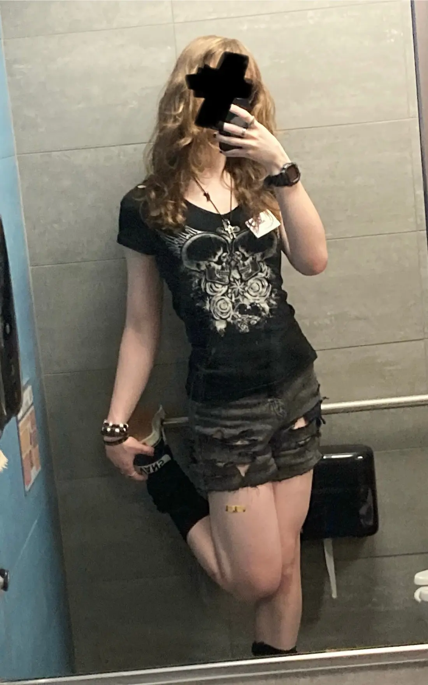
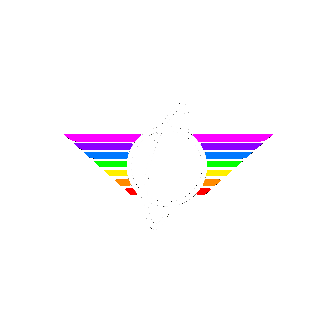

Name:
Sierra
Age:
20-something
Pronouns:
she/they
From:
Alaska
Currently in:
East-coast area
Job:
Computer and
youtube

Hello kid
My name is Sierra. I'm a person who likes a variety of different things and does an even greater variety of different things, when I have the time. I make music and art and such, although you most likely know me from my YouTube channel, Captain KRB, where I make long-ish videos on things I find interesting and want to ramble about (most popularly, apparently, Herobrine and Wikipedia). When not doing YouTube stuff, which is pretty often I think, I study Computer Science and work on projects of all kinds, some of which are probably gonna end up here at some point. Check the toolbar above to maybe find these!!
As for me personally, I'm a trans girl born around the beginning of the present millennium, and I've seen a fair amount of things, although I'm hoping to see more before all is said and done. I spent the majority of my life in Alaska before moving to the Lower 48 for college, and for better or for worse it seems like this is where I'm gonna stay for the immediate future; it's been a strange few years, but a lot of good has come of it. Weirdly, even though I can muster up 5 pages of script about Blockbuster Video, I find inspiration comes sparingly when writing about myself, so instead I'll present these itemized lists, although these too are by no means complete :3
hobbies
-
music
- playing guitar
- playing keyboard
- composing (mostly electronic and soundtrack)
- singing
-
computer programming
- web programming
- making command-line utilities
- software engineering (sometimes)
- game design
- networking
-
visual art
- painting
- drawing (pen and graphite)
- collage
- miniature-making / diorama
- driving and road trips
- sewing
-
writing
- scriptwriting
- short story
- maybe longform in the future ???
- cooking and baking
-
video production
- youtube "documentaries"
- stop-motion
- 2-D/3-D animation
- motion graphics
- attempting to capture period aesthetics in graphics (really specific but comes up surprisingly often)
- digital archaeology and archiving
- carpentry
- small engine repair
- learning new stuff to add to this list :3
interests
-
music (listening)
- electronica (pilotredsun, squarepusher, u-ziq)
- dnb / jungle (golden boy, bong-ra, prodigy)
- punk (operation ivy, minor threat, stiff little fingers)
- country / bluegrass (jerry reed, johnny cash, buck owens)
- surf / rockabilly (dick dale)
- garage rock-adjacent (the mummies, guitar wolf, sex mex)
- new wave (new order, nocturnal emissions)
- emo / screamo (me too thanks, olth, brave little abacus)
- literally everything else (granddaddy, the clash, mf doom, dj rozwell, talulah gosh, fm skyline, bruce haack, wu-tang clan, primus, etc.....)
- full list can't fit here, talk to me for more!!
- history (no not in that way I promise)
- computer science
- mysteries and obscure things
- fashion (still workin on this one)
-
politics
- I am a leftist (shocker, huh?)
- researching, especially things that haven't really been looked at before
- food and the various things you can do with it
-
games
- caves of qud
- minecraft (1/3)
- balatro
- undertale / deltarune (2/3)
- fnaf (3/3 - 2010s child trifecta)
- enter the gungeon
- stellaris
- kingdom of loathing
- gmod
- reading
- computer graphics
I kinda want this site to be an aggregation of everything that makes me who I am, and it'll be something I work and expand on whenever I've got the time. Hopefully, if I can pull it off, this site will give you a better idea of me than this page ever could :)
That's about all I got (for now...). I'll be seeing you all around.
-- Sierra